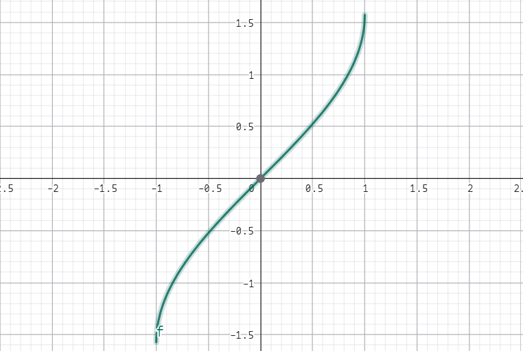
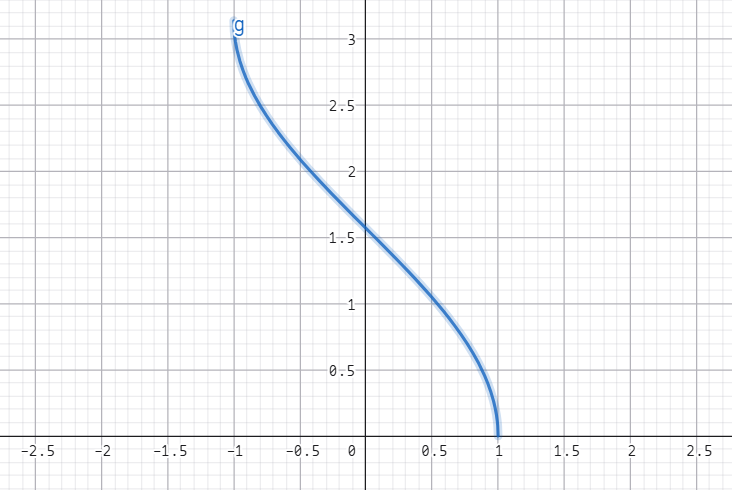
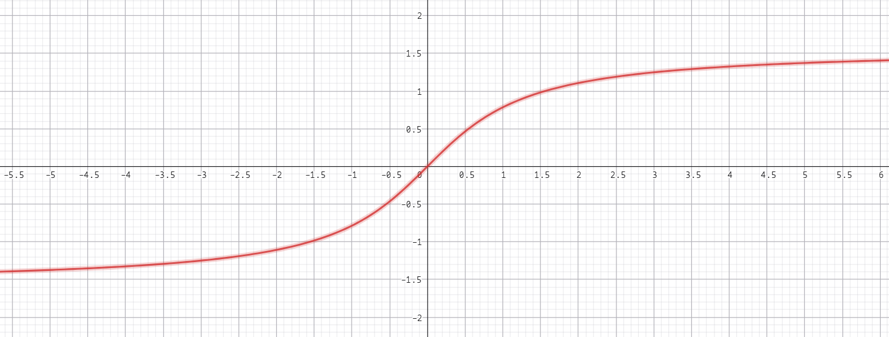

微分和导数
定义 3.1 可微 & 微分
对于函数 y=f(x) 定义域中任何一点 x0。
如果存在一个只与 x0 有关而与 Δx （增量，可正可负）无关的数 Ax0 使得当 Δx→0 时有 Δy=A(x0)⋅Δx+o(Δx)。
其中 o(Δx) 表示 Δx 的一个高阶无穷小量（Δx→0limΔxo(Δx)=0）
则称 f 在 x0 处可微，A(x0) 称为 f 在 x0 点的微分。
如果 f 在区间 I 上的每一点都是可微的，则称 f 在 I 上是可微的。
注记：f 在 x 点可微，且 Δx→0，把 Δx 称为自变量的微分，记作 dx。将 A(x)⋅Δx=A(x)⋅dx 称为因变量的微分，记作 dy。（因为 Δx→0,o(Δx)→0）
意义：函数的增量可以近似写作一个线性函数
定义 3.2 可导
若函数 y=f(x) 在定义域内的一点 x0 处，
极限：Δx→0limΔxf(x0+Δx)−f(x0) 存在，则称 f(x) 在 x0 处可导。
如果 f 在区间 I 上的每一点都可导，则称 f 在 I 上可导：
注记：上式可以写作 x→x0limx−x0f(x)−f(x0)
命题 3.1
对于一元函数，可微和可导互为充要条件。
证明：
⇒：
如果 f 可微，则 Δy=A(x0)Δx+o(Δx)⟺f(x0+Δx)−f(x0)=A(x0)Δx+o(Δx)
两边同时除以 Δx⇒Δx→0limΔxf(x0+Δx)−f(x0)=Δx→0lim(A(x0)+Δxo(Δx))。
两边极限存在所以可导。
⇐：
如果 f 可导，则 Δx→0limΔxf(x0+Δx)+f(x0)=A∈R。
⇒Δx→0limΔxf(x0+Δx)−f(x0)−AΔx=ΔxlimΔxΔy−AΔx=0。
这说明当 Δx→0⇒Δy−AΔx=o(Δx)。
所以存在 A s.t. Δy=AΔx+o(Δx)。
□
注记：设 y=f(x) 是平面上一条“光滑”连续的曲线 γ;(x,f(x)) 是曲线上一定点，(x+Δx,f(x+Δx)) 为曲线上一动点且位于 (x,f(x)) 附近；过这两点可以唯一确定一条割线。
当动点沿曲线 γ 无限逼近 (x,f(x)) 时（即 Δx→0），这些变化的各县存在唯一的极限位置，那么位于这个极限位置的直线就称为曲线 γ 在 (x,f(x)) 点的切线，斜率为 Δx→0limΔxf(x0+Δx)−f(x0)≡f′(x)。
定义 3.3 左右导数
将左极限 Δx→0−limΔxf(x+Δx)−f(x) 称为 f(x) 在 x 处的左导数。
将右极限 Δx→0+limΔxf(x+Δx)−f(x) 称为 f(x) 在 x 处的右导数。
注记：f 在 x 点可导的充要条件是其在 x 点处左右导数存在且相等。
注记：左导数也可以写成 x→x0−limx−x0f(x)−f(x0)≡f−′(x)。
注记：右导数也可以写成 x→x0+limx−x0f(x)−f(x0)≡f+′(x)。
例题 3.1
证明：y=f(x)=∣x∣ 在 x=0 处不可导。
证明：
x=0⇒f−′(x)=−1=f+′(x)=1。
故不可导，证毕。
导数的四则运算和反函数求导方法
命题 3.2 三角函数的导数
f(x)=sinx 的导数为 cosx。
证明：
Δx→0limΔxsin(x+Δx)−sinx=Δx→0limΔxsinxcosΔx+sinΔxcosx−sinx=Δx→0limsinxΔxcosΔx−1+cosxΔxsinΔx。
根据重要极限 x→0limxsinx=1。
原式 =cosx。
注：tanx 的导数是 sec2x，其中 secx=cosx1；cotx 的导数是 −csc2x，其中 cscx=sinx1
命题 3.3 对数函数的导数
f(x)=lnx 的导数为 x−1,(x>0)（此处不是说导函数而是导数）
证明：
Δx→0limΔxln(x+Δx)−lnx=Δx→0limΔxln(xx+xΔx)≡t→0limxtln(1+t)
根据等价无穷小量代换 ln(1+t)≈t：原式 =x1
命题 3.4 ex 的导数
f(x)=ex 的导数为 ex,x∈R。
证明：
Δx→0limΔxex+Δx−ex=Δx→0limΔxex(eΔx−1)
根据等价无穷小量代换 ex−1≈x，原式 =ex。
命题 3.5 导数的线性组合
假设 f,g 在区间 I 上可导，a,b∈R。
则 (af+bg)′=(af)′+(bg)′
只需要证明 (f+g)′=f′+g′ 且 (af)′=af′。
根据定义直接展开就好，这是简单的：
Δx→0limΔxaf(x+Δx)−af(x)=aΔx→0limΔxf(x+Δx)−f(x)
加法也一样，移一下项是显然的。
命题 3.6 指数函数的导数
(ax)′=axlna,(logax)′=xlna1,a>0,=1。
证明：
ax=elnax=exlna
利用命题 3.4 可得 (ax)′=(exlna)′=lna⋅exlna=axlna
（这里没有使用复合函数求导?TODO）
命题 3.7 幂函数的导数
(xα)′=αxα−1
证明：
Δx→0limΔx(x+Δx)α−xα。
用二项式定理展开：(x+Δx)α=(0+(Δx)α)+(1α)(x+(Δx)α−1)+(2α)(x2+(Δx)α−2)+⋯
我们只需要把二项式系数的 α 提出来就行了。
命题 3.8 导数的乘和除法法则
设 f,g 在区间 I 上可导，则：
-
fg 也在区间 I 上可导，且 (fg)′=f′g+fg′。
-
gf 也在区间 I 上可导（g 没有零点）(gf)′=g2f′g−fg′
证明：
只证明 ∀x0∈I，令 F(x)=f(x)g(x),x∈I。
(fg)′(x0)=F′(x0)=Δx→0limΔxF(x0+Δx)−F(x0)。
=Δx→0limΔxf(x0+Δx)g(x0+Δx)−f(x0)g(x0)。
现在想要分别写出 f,g 导数的形式，考虑添加项：
=Δx→0limΔxf(x0+Δx)g(x0+Δx)−f(x0)g(x0)−f(x0+Δx)g(x0)+f(x0+Δx)g(x0)。
=Δx→0limΔxf(x0+Δx)[g(x0+Δx)−g(x0)]−g(x0)[f(x0)−f(x0+Δx)]
两边分开：
=Δx→0lim[f(x0+Δx)Δxg(x0+Δx)−g(x0)+g(x0)Δxf(x0+Δx)−f(x0)]
=f′(x0)g(x0)+f(x0)g′(x0)
这里用到了引理：f 在某处可导 ⇒ 某处连续，某处连续可以有：Δx→0limf(x+Δx)=f(x)。
引理 可导和连续的关系
设 f(x) 在定义域内一点 x0 处可导，即：Δx→0limΔxf(x+Δx)−f(x)=A∈R。
即：Δx→0limΔxf(x0+Δx)−f(x0)−AΔx=0。
现在我们想要用它推出 f(x0)=x→x0limf(x)。
改写形式：
x→x0limx−x0f(x)−f(x0)−A(x−x0)=0⟺x→x0lim[f(x)−f(x0)−A(x−x0)]=0
可以得出：f(x0)=x→x0limf(x)。
所以命题成立。
对于上面那步，由于连续性可以把极限拿进去，然后 Δx 就没掉了。
命题 3.9 反函数求导
若 y=f(x) 在区间 (a,b) 上单调（为双射，也就存在反射即反函数存在）。
且在 I 上可导，且 f′(x)=0，不妨设为单增。
令 α=x→a+limf(x),β=x→b−lim。
则 f 的反函数 x=g(y) 在 (α,β) 上也可导。
且 g′(y)=f′(x)1。
证明：
由于 y=f(x) 在 I 上可导，故在 I 上连续。
由此其反函数 x=g(y) 在 (α,β) 上连续。
下证：Δy→0limΔyg(y+Δy)−g(y) 存在。
对于 y∈(α,β)，设 y=f(x),x∈(a,b)。
由 Δy 的定义，0=Δy=f(x+Δx)−f(x)⇒y+Δy=f(x+Δx)⇒g(y+Δy)=x+Δx=g(y)+Δx。
所以上面极限 =Δy→0limΔyΔx=Δy→0limΔxΔy1=Δx→0limf′(x)1。
（注意 Δy→0⟺Δx→0）
命题 3.10 反三角函数
反正弦函数
y=sinx 在 (−2π,2π) 上单调，可导
（这个区间取法其实是任意的。）
所以在这上面存在反函数 x=g(y)≡arcsiny,y∈(−1,1)。
一般的，把 f(x)=arcsinx,(x∈(−1,1)) 称为反正弦函数。
其也是 (−1,1) 上的严格单调连续可导函数，值域为 (−2π,2π)。

反余弦函数
y=cosx 在 (0,π) 上单调，可导。
所以在这上面存在反函数 x=g(y)≡arccosy,y∈(−1,1)。
一般的，把 f(x)=arccosx,(x∈(−1,1)) 称为反余弦函数。
其也是 (−1,1) 上的严格单调连续可导函数，值域为 (0,π)。

反正切函数
y=tanx 在 (−2π,2π) 上单调可导。
所以在这上面存在反函数 x=g(y)≡arctany,y∈(−∞,+∞)
一般的，把 f(x)=arctanx,(x∈R) 称为反正切函数。
其也是 R 上的严格单调连续可导函数，值域为 (−2π,2π)

导数
(arcsinx)′=1−x21,(x∈(−1,1))
(arccosx)′=−1−x21,(x∈(−1,1))
(arctanx)′=1+x21,(x∈R)
证明：
对于第一个，根据反函数求导法则：
(arcsiny)′=sin′x1=cosx1=1−sin2x1=1−y21
余弦差不多。
arctanx 也差不多，只是多了一两步，为了方便记住就好了。
复合函数求导和隐函数求导
命题 3.11 复合函数求导
假设 f(u) 在 u0 处可导，u=g(x) 在 x0 处可导
且 u0=g(x0)。
那么 (f∘g)(x)=f(g(x)) 在 x0 处可导。
且 (f∘g)′(x0)=f′(u0)⋅g′(x0)
证明：
注：其实也可以写作微分的形式：dxd(f∘g)=dud(f∘g)⋅dxdu（链式法则）
当然也可以写作：d[f(g(x))]=f′(u)g′(x)dx
例题 3.2
求 y=e1+cosx 的导函数。
设 f(x)=ex,g(x)=x,h(x)=1+cosx。
即求 (f∘g∘h)′(x)。
y′=f′(g(h(x)))⋅g′(h(x))⋅h′(x)=e1+cosx⋅21+cosx1⋅(−sinx)
技巧 对数求导法
形如 y=f(x)=u(x)v(x) 的函数一般先对两边取对数再分别求导，最后通过一次复合变回来。
例子：
let z(x)=lny=v(x)lnu(x)。
z′(x)=v′(x)lnu(x)+v(x)u(x)u′(x)
由于 y=ez(x)⇒y′=z′(x)ez(x)
所以 yy′=v′(x)lnu(x)+v(x)u(x)u′(x)。
也就是 y′=u(x)v(x)[v′(x)lnu(x)+v(x)u(x)u′(x)]
技巧 隐函数求导
如果方程 F(x,y)=0 可以确定为 y,x 的一个函数关系，但是又不能写出 x,y 之间的函数关系式，则称 y 是 x 的隐函数。
例子：
x+esiny+ln(1+y)=0。
两端同时对 x 求导：
1+esiny⋅cosy⋅y′+1+y1⋅y′=0
然后解出 y 就行了。
高阶导数和微分
定义 3.4 高阶导数
假设 y=f(x) 可导。
如果其导函数 f′(x) 仍是一个可导函数，则 [f′(x)]′ or dxd(dxdf) 称为 x 的二阶导数，记作 f′′(x) or dx2d2f，称 f 为二阶可导。
更高阶同理（f′′′(x),f(3)(x),dx3d3f）。
n 阶：f(n)(x) or dxndnf
例子：
- sin(n)=sin(x+n2π)
- f(x)=x2−11; calculate f(n)(x)。
- f(x)=21(x−11−x+11)
- f(n)(x)=21[(−1)n×n!×(x−1)−(n+1)−(−1)n×n!×(x+1)−(n+1)]
- f(x)=arctan(x),x∈(−1,1); calculate f(n)(x)。
- f′(x)=1+x21=1−(−x2)1
- 注意到等式：1−t1=i=0∑∞ti
- 所以 f′(x)=i=0∑∞(−1)ix2i,∣x∣<1
- g′(x)=[i=0∑∞(−1)ix2i]′=i=0∑∞(−1)i(x2i)′=i=0∑∞(−1)i2i(x2i−1)（这里使用了逐项求导定理）
- g′′(x)=i=1∑∞(−1)i(2i)(2i+1)x2i−2
- ……
- g(n)(x)=i≥2n∑∞(−1)i(2i)(2i−1)(2i−2)…(2i−n+1)x2i−n
TODO
例子：设有参数方程：{x=φ(t)y=ψ(t),t∈[a,b] 其中 φ,ψ 具有二阶连续的导函数。求 dxdy,dx2d2y。
求导：dtdx=φ′(t);dtdy=ψ′(t)。
这里能直接除吗？其实是没有定义过的。
来用微分定义写一下：Δx=φ′(t)Δt+o1(Δt);Δy=ψ′(t)Δt+o2(Δt)
所以 ΔxΔy=φ′(t)Δt+o1(Δt);ψ′(t)Δt+o2(Δt)
上下同除 Δt，同时取极限：
Δt→0limφ′(t)+Δto1(Δt)ψ′(t)+Δto2(Δt)=Δt→0limφ′(t)ψ′(t)=φ′(t)ψ′(t)=Δx→0limΔxΔy=dxdy
对于二阶导：由定义：
dx2d2y=dxd(dxdy)=dxdh(t)
令 h(x)=φ′(t)ψ′(t)
上式 =dxdh(t)=dtdh(t)dxdt=(φ′)2ψ′′φ′−φ′′ψ′